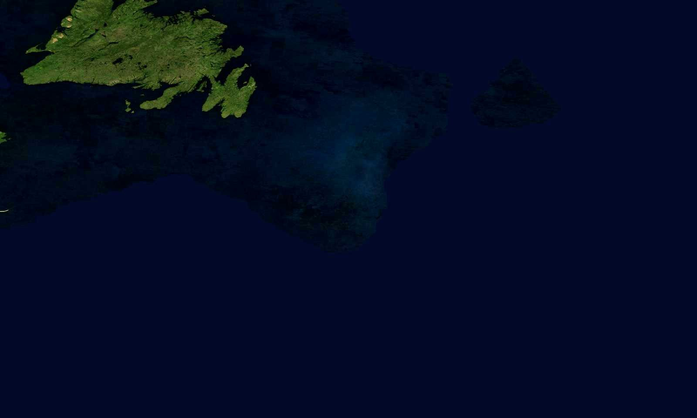

In mezzo all'oceano non ci sono strade, montagne o cartelli. Come si fa a trovare una nave che chiede aiuto? Costruiamo i riferimenti una tappa alla volta: a ogni tappa chiedetevi che cosa manca ancora.
La notte del 14 aprile 1912
Una chiamata nel buio
Il Titanic, la nave più grande del mondo, sta attraversando l'Oceano Atlantico dall'Inghilterra a New York. Poco prima di mezzanotte urta un iceberg e comincia ad affondare.
Voi siete sulla Carpathia, una nave partita da New York e diretta a Fiume, sul mare Adriatico. Siete i marconisti: il vostro lavoro è ricevere e trasmettere i messaggi radio, in codice Morse. All'improvviso la radio si accende.

Trascina per girare il globo
Foto: NASA, Blue Marble Next Generation, dal servizio GIBS. Da ovest a est la foto copre circa 1650 km.
Ora tocca a voi: trovate le città
Il computer vi dà le coordinate di una città. Trovatela sul globo: giratelo trascinandolo, muovete il mouse sopra e leggete in basso latitudine e longitudine. Quando i numeri coincidono, cliccate.
Dove può essere il Titanic?
Il vero SOS
Che cosa trasmise davvero il Titanic
Nel gioco avete fatto le domande una alla volta. Quella notte il marconista del Titanic mise tutto in un solo messaggio, poco dopo mezzanotte:
Titanic → tutte le naviCQD CQD SOS TITANIC POSITION 41.44 N 50.24 W. REQUIRE IMMEDIATE ASSISTANCE.
Pochi minuti dopo un ufficiale ricontrollò i calcoli, e la posizione fu corretta:
Titanic → CarpathiaCOME AT ONCE. WE HAVE STRUCK A BERG. POSITION 41.46 N 50.14 W.
CQD e SOS sono i segnali di soccorso. Nel 1985 il relitto è stato trovato sul fondo dell'oceano, a quasi 4000 metri: a circa 20 km a est della posizione trasmessa (sulla foto, il punto verde). Un piccolo errore nella misura della longitudine: sul mare, anche pochi chilometri contano.
Se il video non parte, aprilo su YouTube. È la ricostruzione dei messaggi in codice Morse di quella notte: il testo scorre sullo schermo, in inglese.